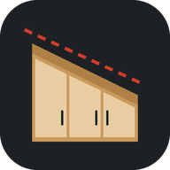

MebloMen
Boki i przegrody na cokole, wieńce dolne, górne i półki między nimi, osobno w każdej sekcji. Wymiary w mm.
Długość = kierunek słoi. Formatki skośne (fronty, blendy, plecy) podane jako trapez: szerokość i dwie wysokości.
Rozkrój orientacyjny, pasami (cięcia gilotynowe). Trapezy liczone jako prostokąt, w który się mieszczą. Numery = pozycje z listy.